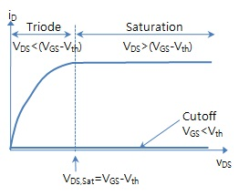

2.1. MOSFET
전자를 carrier로 사용하는 MOSFET을 NMOS, 홀을 사용하는 MOSFET을 PMOS라고 합니다.FET은 Field-effect Transistor의 약자로 전기장을 사용하여 반도체의 전류 흐름을 제어하는 transistor입니다.
Gate에 걸어주는 전압을 조절하여 NMOS전체의 전류의 흐름을 제어하는 소자입니다.
전기장이 끊기는 순간을 기점으로 triode영역과 saturation영역이 나뉩니다.

2.1.1 Triode
이 영역에서의 동작이 3극 진공관(Triode) 동작과 유사하기 때문에 Triode라는 명칭이 유래되었습니다.
디지털 논리소자에서 닫힌 스위치(ON)처럼 동작하며, 선형 저항 소자처럼 동작합니다.
그러나 그것이 증폭이나 개방을 의미하진 않습니다.
문턱전압보다 큰 게이트 전압으로 전도 채널이 형성된 상태에서, 드레인-소스 전압이 전도 채널 형성에 기여하는 유효 게이트 전압보다 작은 상태입니다.
triode영역에서는 Drain to Source에 걸어주는 전압에 비례해서 전류가 증가합니다.
문턱전압은 채널이 형성되는 전압입니다.
2.1.2 Saturation
이 영역에서 MOSFET은 증폭기의 역할을 합니다.
문적전압보다 큰 게이트 전압으로 전도 채널이 형성된 상태이고, 드레인-소스 전압이 전도 채널 형성에 기여하는 유효 게이트 전압보다 작은 상태입니다.
따라서 드레인-소스 전압을 키워도 더이상 드레인 전류가 증가하지 않습니다.
2.2. 전제 조건
위의 시뮬레이션은 비전공생과 관련 지식이 많지 않은 분들도 MOSFET의 기본동작을 보다 쉽게 이해시키기 위해서 많은 전제조건을 통해서 가장 이상적이고 간단한 MOSFET의 동작을 구현했습니다.
위의 시뮬레이션에 사용된 전제조건은 다음과 같습니다.
2) Maxwell-Boltzmann approximation
3) MOS는 이상적인 물질 구조로 이루어져 있다.
4) 소자 내에서 흐르는 전류는 MOSFET에서 연속이며 일정
5) channel length modulation은 발생하지 않는다.
6) Body effect는 발생하지 않는다.
7) short channel effect의 문제가 발생하지 않을만큼 긴 long channel MOSFET이다.
2.3. MOSFET +
1) Non ideal
실제로는 시뮬레이션 한 것처럼 동작하지는 않습니다.
채널의 길이가 매우 길고 소자들이 이상적인 경우에는 시뮬레이션과 유사하게 동작하기는 하지만 실제로는 body effect, channel length modulation, parastic capacitance등의 문제를 무시할 수 없기 때문에 시뮬레이션과 동일하게 작동하지 않습니다.
2) 소재
이상적인 소재들을 사용한다고 했지만 현실에서 완벽한 이상적인 소재는 없습니다.
거기에 더불어 MOSFET은 집적회로에 작게 많이 들어가야 하기 때문에 비싼 비용이 드는 소자를 널리 보급하기는 어렵습니다.
또한, 공정상의 이유로도 복잡한 소재를 사용하기 어렵습니다.
그래서 발생하는 trade off들이 non ideal한 동작을 유발합니다.
실제로는 silicon을 주로 사용하며 산화막으로도 SiO2를 가장 많이 사용했습니다.
그 이유는 비용이 저렴하고 공정하기 간편하기 때문입니다.
이에 관해서도 더 많은 내용이 있으니 관심이 있으시다면 찾아보시는 걸 추천합니다.
3) 채널의 길이
MOSFET은 처음 탄생해서 지금까지 소자의 크기를 계속 줄여오는 scaling down으로 발전되었습니다.
그 이유는 반도체 소자의 성능향상을 위해서 scaling down이 필수불가결했기 때문입니다.
채널의 길이가 짧아지면서 기존에 발생하지 않았던 문제들이 생겼습니다.
그 중에 hot carrier로 인한 문제는 MOSFET에 영구적인 문제를 발생시켰고 이는 MOSFET의 breakdown라는 결과로 이어졌습니다.
이 문제를 해결하기 위해 여러 해결 방법이 도입되었으나 채널 길이가 짧아져서 발생하는 문제는 여전히 해결해야할 문제로 남아있습니다.